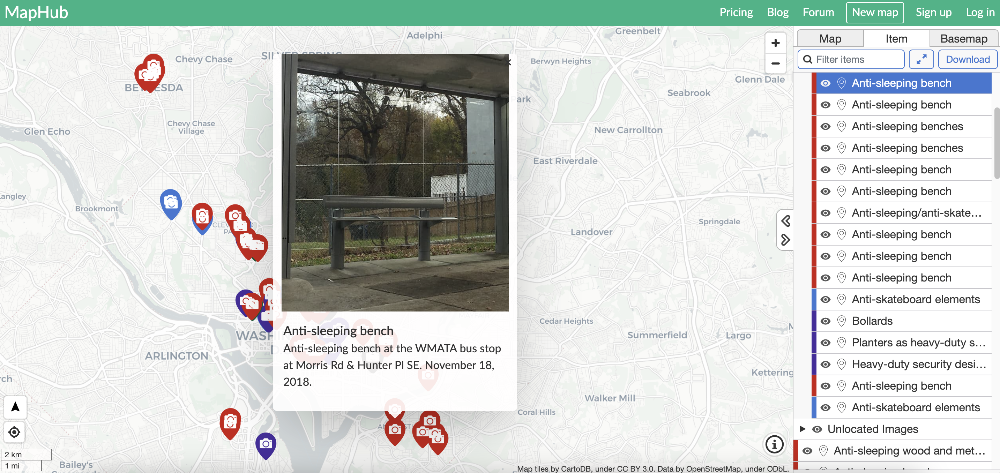
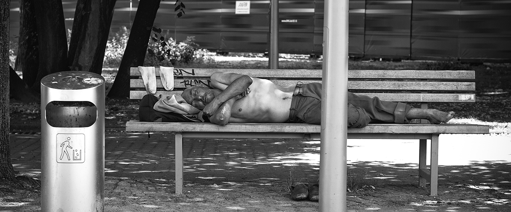

This map explores income disparity and contains a fascinating map of NYC neighborhoods which explores wealth divides in the five boroughs and surrounding areas of Long Island and New Jersey. The map, pictured below, uses cooler, blue-green tones for higher income and yellow and red tones to indicate neighborhoods with a lower average household income.
I wished to highlight this map for its depiction of New York City as a largely divided city in terms of wealth distribution. Although I first postulated that seating arrangements were more densely populated in wealthier areas, but this map made it clear that both poor and wealthier neighborhoods suffer from a lack of traditional bus seating arrangements.
However, in wealthier neighborhoods, it might be the case that a higher number of people use personal vehicles, ride-sharing, or other, more expensive ways of getting around, and that elsewhere, a higher percentage of the population relies on public transportation. The complexity of the overlapping factors of income disparity and the use of personal vehicles as opposed to public transportation, as well as other factors would lead me to believe that more data is needed before making a conclusion about a correlative relationship between income disparity and a lack of bus seating arrangements.
This article expresses some of the discontent that riders have experienced due to leaning bars. The article mentions that "Critics say the bars... keep the homeless from camping out and are uncomfortable for people with disabilities and the elderly."
However, this problem is far deeper than merely making riders feel unwelcome. Leaning bars pose a barrier to accessibility. A disabled person might be barred from using transit entirely, and may experience such a hostile environment in the train and bus systems that they resort to other, more expensive ways of getting around.
This article delves into the future of defensive design, especially in the Washington DC area. If you scroll to the bottom, there is a map of hostile architecture in the DC metropolitan area that you can interact with. One such example of defensive design in the form of an anti-sleeping bench is depicted below.
This project maps examples of defensive design and hostile architecture in Toronto's public parks.
This article questions what is behind the rise in defensive design, hostile architecture, and other ways of making people feel unwelcome in public spaces.
Defensive Design is not merely a problem faced by the unhomed, our elders, our children, our disabled neighbors, and pregnant people. It's a problem for us all that certain segments of society are being discriminated against in such a heinous and insidious manner.
Make no mistake. This is not beautification. Nor is it modernization. It's a fight against the homeless. Why don't we invest in fixing the problem of homelessness by getting our unhomed neighbors off the streets and into public housing, training them with skills, giving them a safe place to lay their head, and providing them with a basic level of human dignity? Why do we instead spend millions of dollars implementing hostile public environments that are to the detriment of us all? Would it not be better to invest in our unhomed neighbors, provide them a safety net, and do away with defensive design? It goes without saying that the unhomed are just as valuable and deserving of basic human dignity as any of us. We must take steps to help them find their way back on their feet, and not exacerbate the problem by making our public spaces unsafe and unwelcoming for them and for us all.
Pictured below is an image of a homeless man sleeping on a traditional bench. In many cities, it is not possible to achieve even this basic level of comfort on most benches, which are designed with dividers and other elements to make them inhospitable to the unhomed.
